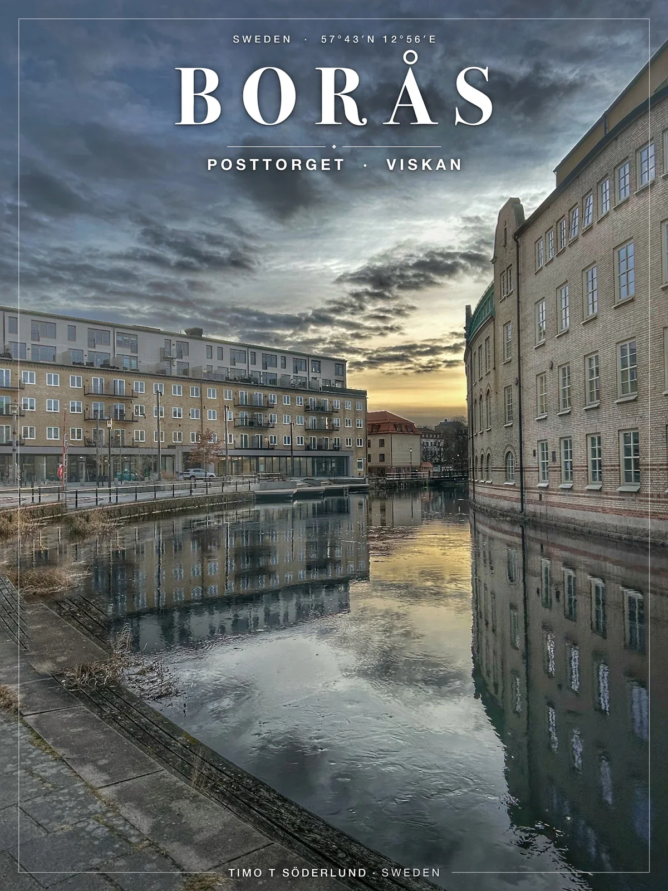

Posttorget · Viskan
Boardwalk Promenade, Viskaholm & Västerbrogatan · Central Borås, Sweden
English
Inaugurated in October 2022 along the Viskan river in central Borås, Sweden, the Posttorget waterfront promenade offers a fresh vantage point over the city's historic core. The geometric timber boardwalk and stainless railings lead the gaze across the calm, reflecting river toward the 1913 yellow-brick Viskaholm building and Västerbrogatan. Photographed by Timo T Söderlund for Borås Poster Project 2026 in Boras, Sweden.
Svenska
Invigt i oktober 2022 längs Viskan i centrala Borås erbjuder Posttorget och dess nya strandpromenad ett vackert perspektiv över stadens historiska hjärta. Trädäcket och räcket leder blicken över Viskans stilla, spegelblanka vatten mot Viskaholms anrika gula tegelfasad från 1913 och Västerbrogatan. Fotograferad av Timo T. Söderlund för Borås Poster Project 2026.
Photographer & Edition: Timo T Söderlund · Borås, Sweden (2026)